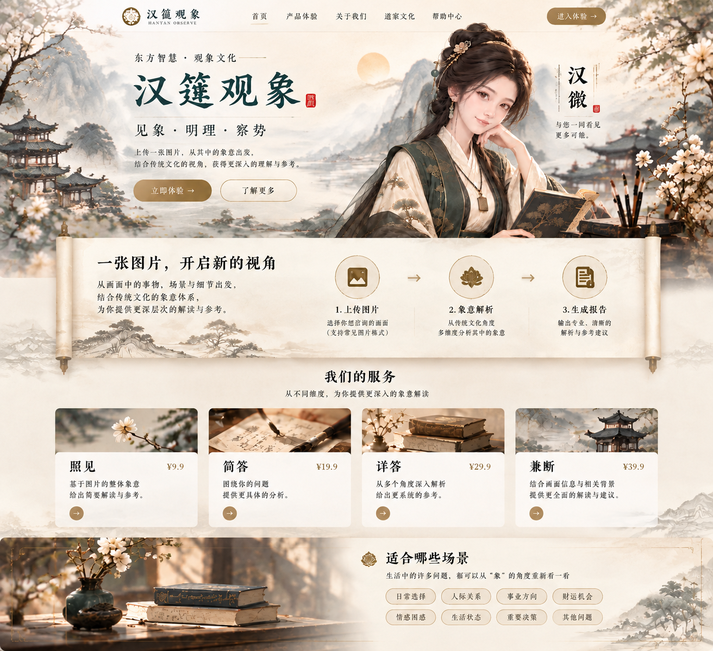

东方智慧 · 观象文化
上传一张图片，从其中的象意出发，结合传统文化的视角，获得更深入的理解与参考。
从画面中的事物、场景与细节出发，结合传统文化的象意体系，为你提供更深层次的解读与参考。
从不同维度，为你提供更深入的象意解读
基于图片的整体象意，给出简要解读与参考。
围绕你的问题，提供更具体的分析。
从多个角度深入解析，给出更系统的参考。
结合画面信息与相关背景，提供更全面的解读。
生活中的许多问题，都可以从“象”的角度重新看一看
HANYAN OBSERVE
这是前端展示版。选择服务后，可在这里继续接入你的上传、订单与 AI 分析接口。